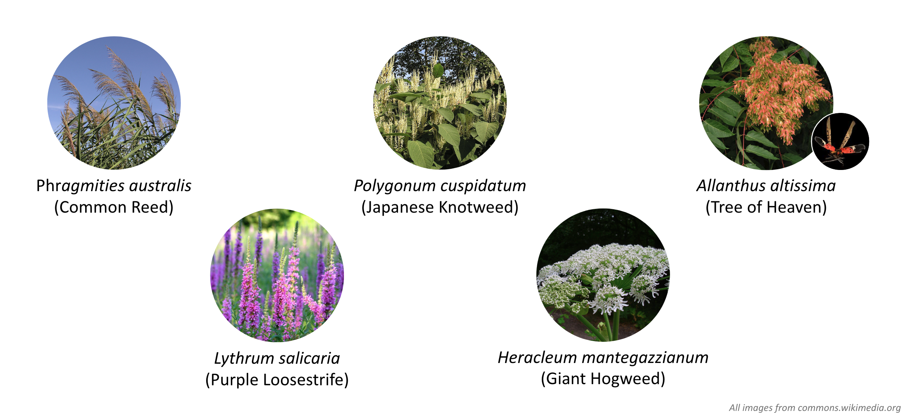
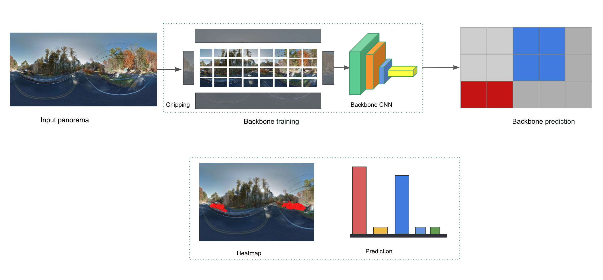
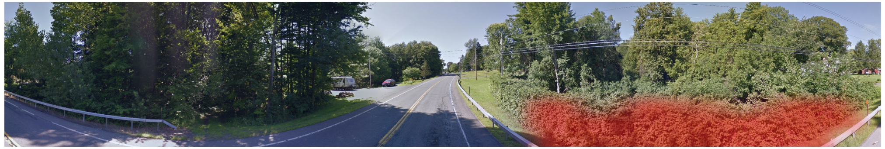
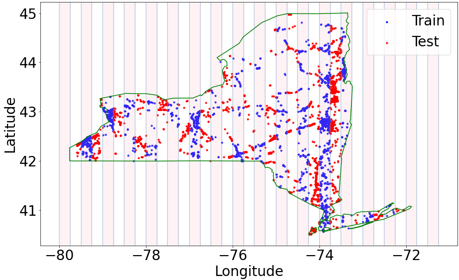
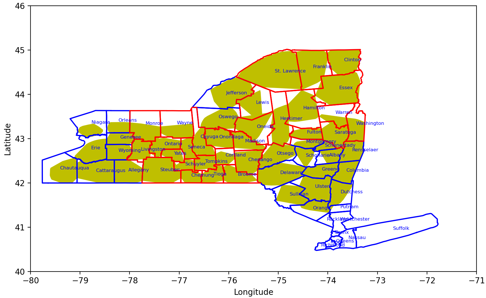

Invasive Species Detection using Deep Learning
Invasive plants are a significant economic and ecological problem globally, but manual monitoring is time consuming and resource intensive. In this research, we use artificial intelligence (AI) to automatically detect the presence of target high-priority species in street level imagery (e.g., from Google Map’s Street View). This would enable us to detect the presence of these species at specific locations so that managers could monitor and/or eradicate them.
We consider high-priority invasive species that pose significant economic and ecological risks to NYS:


After training our model, it outputs heat-maps over panoramas showing the location for invasive species along with prediction scores.

For quantitative evaluation of our system, we split the collection of annotated panoramas into distinct train and test location sets. To ensure that our system generalizes to all regions within NY state, we collected geographically diverse manually annotated panoramas. We divided the area of New York state longitudinally at a 0.25 degrees interval. As show below, for each strips blue points are used for training only and red points for evaluation.

We use several human annotators to label invasive regions in images in the form of bonding boxes which are eventually used for training and evaluation of the ML system. Our effort was carried out from 2019 - 2021.
| Species | Unique Panoramas | Annotated boxes |
|---|---|---|
| Common Reed (Phragmites) | 1385 | 2513 |
| Japanese Knotweed | 1132 | 2539 |
| Cattail | 242 | 568 |
| Giant Hogweed | 1 | 7 |
| Purple Loosestrife | 229 | 691 |
| Tree of Heaven | 526 | 1066 |
| Wild Parsnip | 171 | 864 |
| Total | 3685 | 8241 |
After developing the algorithms, we proposed conducting field studies to assess the model’s predictions in these regions in partnership with local invasive species organizations. We used two strategies:
Of the predicted presence set, 138 were manually verified in the field by RIT researchers and community scientists. Using statistical tests, we found that the model for each species did not differ in performance between areas, suggesting broad applicability across the rest of the state. We also found high agreement (~90%) between the field and on-screen methods, with the majority of the false predictions resulting from mowing between image collection and validation, indicating that on-screen validation is sufficient to conduct final model validation. As a result, we did not do field validation for the three additional species.
They orange regions shows where our model is run for inference. So far, in terms of uniques images we have processes roughly 10 Million panoramas, each of them are of 6,656×13,312 pixels.

We are preparing to release our predictions such that they could be ingested by NYNHP’s iMapInvasives system (nyimapinvasives.org) as a publicly available data layer to improve the ability to map out previously unknown infestations, track changes over time, and develop priority targets for containment and control efforts.